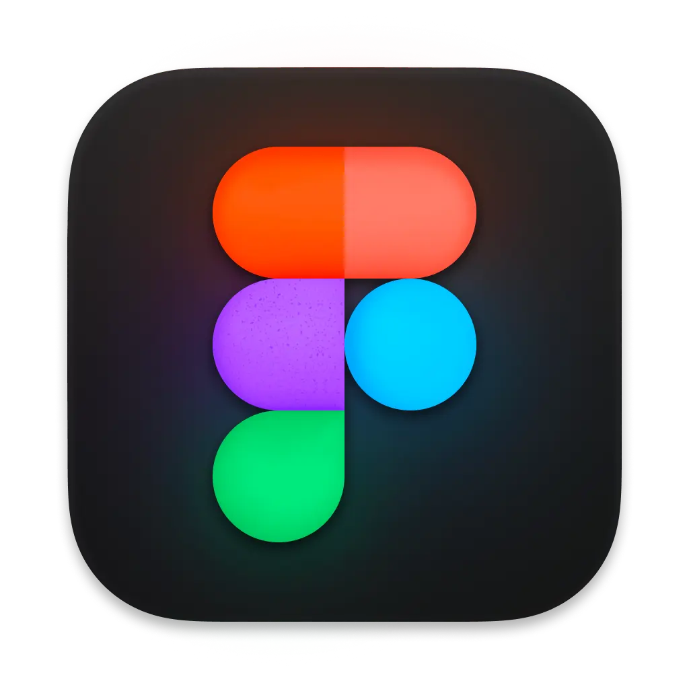
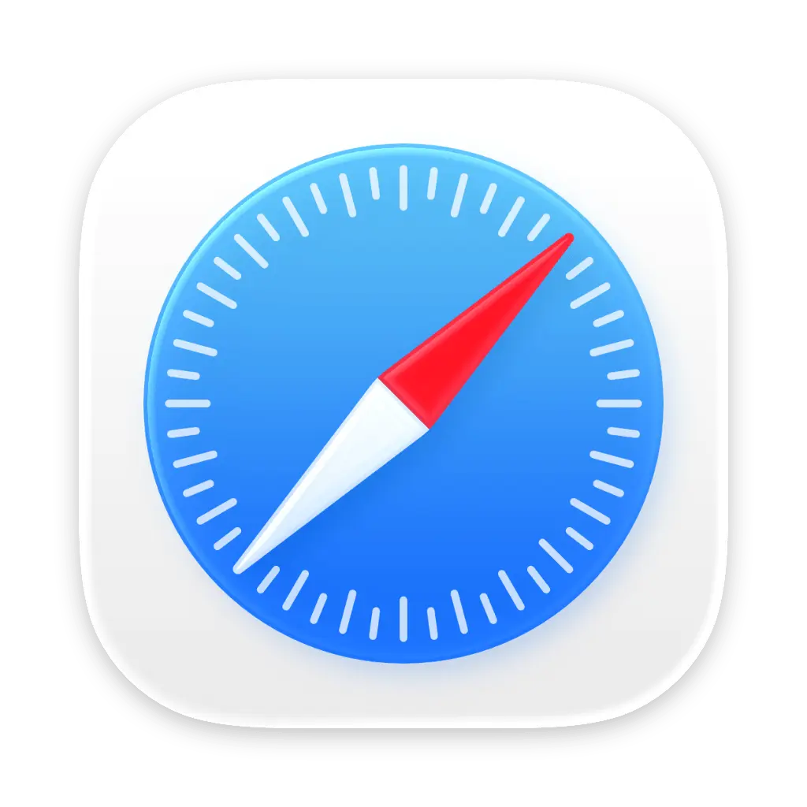
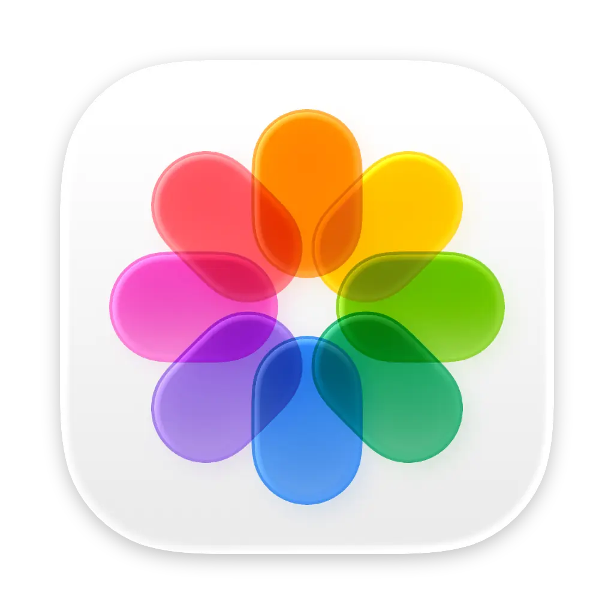

Text
2m ago
"Minimal editorial product landing page with macOS-inspired polish."
Supaste saves your clipboard and screenshots in a beautiful visual history, automatically grouped by type, app, and custom collections.
Use the notch shelf, quick search, inline paste, drag and drop, and the full Library view to find, reuse, and organize anything you've copied.
Keep your clipboard synced with iCloud, automatically organize clips with Smart Auto-Filter, and share files instantly through AirDrop without friction.
Keep your clipboard history, colors, icons, assets, images, text, and important saves beautifully organized in one unified visual database.
"I've been using Supaste now for a week and I LOVE It. I've been looking for this my entire career. I've tried other clipboard managers but none feel as smooth or well designed."
Keep your most useful clips right at the top of your Mac. Drag images, assets, text, colors, SVGs, and files directly to and from your notch without disrupting focus.
Designed from the ground up to feel like an essential part of macOS.

Extract text from screenshots, photos, and scanned documents instantly with on-device Apple Vision OCR.

Copy multiple items in sequence and paste them all together, or pick which one to insert into your document.

Quick keystrokes (Cmd+Shift+V or custom) summon the popup without taking your fingers off the keyboard.
Pin important research, links, and customer quotes, and schedule reminders to revisit them later.
Instant floating paste modal right at your cursor position with fast keyboard arrow navigation.
Full-screen visual archive with custom tags, source application filters, and instant fuzzy search.
Tailored workflows for professionals who live on their Macs.
Keep SVGs, gradients, visual references, hex codes, and icon assets close at hand in a beautiful searchable timeline.
Save code snippets, terminal commands, stack traces, JSON, API responses, and GitHub URLs automatically.
Capture hooks, taglines, SEO keywords, drafts, research links, and campaign screenshots before they disappear.
Reuse your best canned replies, email templates, product links, customer notes, and troubleshooting screenshots.
Organize investor notes, competitor screenshots, pricing pages, URLs, and daily diligence in one visual archive.
Find copied links, addresses, tracking numbers, recipes, quotes, and screenshots whenever you need them again.
One-time payment. No subscription.
Get lifetime access to Supaste on your Mac.
Secure checkout by Polar.sh, powered by Stripe. Prices are in USD, excluding VAT and may vary by location.
Everything you need to know before getting started with Supaste, from privacy and compatibility to how your clipboard history works.
Supaste is a macOS clipboard and screenshot history app that saves what you copy into a beautiful, searchable visual timeline. It helps you find and reuse text, links, images, files, code, colors, screenshots, and more.
Yes. iCloud Sync is optional and can be enabled or disabled anytime in Settings.
Your clipboard history is stored locally on your Mac. Supaste does not use cloud sync, user accounts, analytics, or server-side clipboard storage.
No. Supaste does not upload your clipboard history, screenshots, copied text, images, files, code, or colors to our servers. Your history stays on your device.
Supaste supports copied text, links, images, screenshots, files, rich text, code snippets, colors, SVGs, and other common clipboard content types.
Yes. You can search your history by keyword and browse items grouped by type, source app, and custom categories.
Not yet. The iOS and iPadOS companion app is currently in development and will be available soon.
Yes. Supaste attempts to detect sensitive content such as passwords, API keys, private keys, tokens, credit card numbers, and .env files. By default, sensitive content is not saved.
One device license equals one macOS user account. If you use multiple user accounts on the same Mac, each account requires its own activation.
Yes. You can pause capture whenever you want, for example when working with private, confidential, or sensitive information.
Yes. Supaste can save and organize screenshots, so you can find and reuse them later alongside your clipboard history.
No. Supaste is sold as a one-time purchase. There is no subscription, free trial, or recurring billing.
After purchasing Supaste through Polar.sh, you will receive access to download the Supaste DMG installer file.
Yes. Choose the license that matches the number of Mac user accounts you want to activate. For example, if you have one user account on your MacBook and one on your iMac, you'll need a 2 Device license.
No. Your data is synced directly through Apple's iCloud using your own Apple ID. Supaste does not store or process your synced clipboard data on its own servers.
Cooldock brings music, todos, events, weather, search, stats, quick actions, and more useful widgets into one beautiful dock.
Explore Cooldock